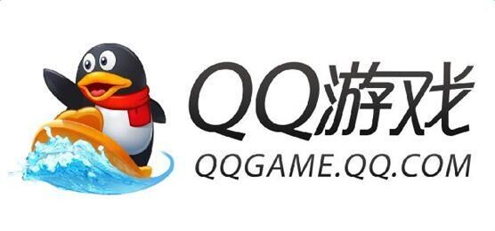
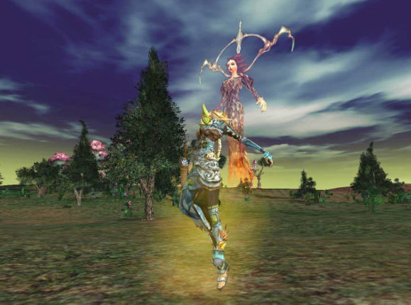
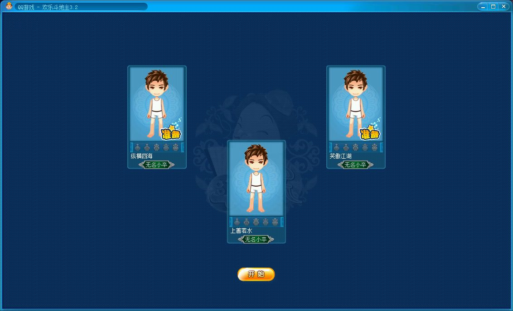
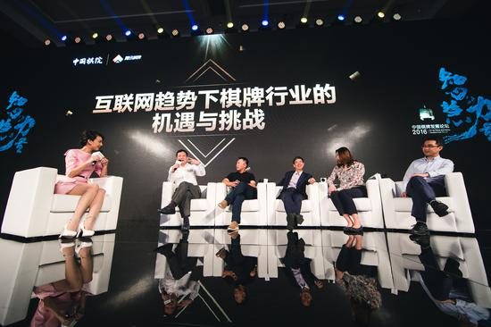

2017年3月，市场研究公司Newzoo公布了2016年全球收入排名前10位的游戏公司，腾讯打败了索尼、暴雪等巨头，以102亿美元的总收入高居榜首，增幅达到了17%。

QQ游戏
不积跬步，无以至千里；不积小流，无以成江海。如今人们只知道月流水超30亿的《王者荣耀》，只知道扛起电子竞技半边天的《英雄联盟》。却不知这个硕大游戏帝国的根基，来自于不起眼的棋牌游戏。今天，就让纹桃（微信公众号：wanghukeji）带你们了解腾讯的棋牌游戏之道。
QQ游戏大厅
与大部分行内人的认知不同，腾讯进入游戏行业的第一次尝试，是一款来自韩国的角色扮演游戏——《凯旋》。这也是中国第一款3D网络游戏，这款游戏无论是画质还是玩法，在当时都是极优秀的，但当时的腾讯运营经验不足，这款游戏产品以失败告终。而后，腾讯将更多的资源倾斜于棋牌游戏。

《凯旋》游戏截图
在上一篇文中，我们提到过，2003年的时候，联众是世界上最大的休闲游戏平台，他的创始人鲍岳桥是UCDOS的开发者，中国软件行业最早的技术大牛人。在联众的最辉煌时刻，他拥有2亿注册用户，月活跃用户1500万，最高同时在线人数60万，在中国、美国、日本、韩国架设有服务器，这样的规模貌似是不可动摇的。
而就在这年，QQ游戏大厅推出了他的第一个版本。拥有打牌升级、四国军棋、象棋三个游戏。后来的事情，我们都知道了。QQ游戏大厅迎来了爆发式的增长，而联众的发展则一直停滞不前，直到14年，才于港股上市。原腾讯集团高级执行副总裁吴宵光，在腾讯大学活动的一次演讲中曾这样说：“联众的产品和技术能力还是比较强的，我们用了一两年时间超过了他们。”

早期斗地主界面
在很多普通玩家眼中，腾讯=抄袭。这显然是带有极大偏见的。2004年，就在这一年，腾讯实现了对联众的超越，成为中国第一的棋牌游戏大厅，最火的是斗地主，最多的时候有两三百万人同时在线。其超越行业巨头的逻辑在于：
A，联众精力转向大型游戏市场，休闲棋牌游戏不再更新，一些BUG长期存在，导致老用户的流失。
B，腾讯快速更新迭代，以更精美的界面，更人性化的操作细节取胜。
举个很简单例子，首先是界面：
在2005年的斗地主版本中，QQ可以自定义用户角色形象，侧边栏显示玩家历史战况，背景清爽。联众角色形象定义要收费，否则就是个空白，背景丑陋，广告一堆，侧边栏是无关紧要的系统消息，毫无美感可言。
其次是对产品品质的把控：
可以这么说，腾讯游戏对细节的打磨和对玩家体验的重视是国内游戏厂商中做的最好的。虽然1亿腾讯用户中有9千9百万都在骂腾讯，但客观来说，腾讯游戏人在对待游戏品质的态度上，是值得肯定和敬佩的，一款代理游戏拿过来，也许为了符合本地化需求，为了优化玩家基础体验，能够窝在手里一改就是好几年，赶上一款自研游戏从研发到上线的时间。这是一种耐心，也是一种诚意，腾讯游戏的路线是做精品，而不是捞一票就走。
2007年，腾讯以极低的价钱从韩国一家不入流的小公司那里，买来了CF穿越火线这款游戏。 其开发者Smile Gate公司只是一家33个人的小公司，至今只制作出了CF一款游戏，研发实力实在有限，推出后在韩国一直不温不火，甚至在2012年停止了运营，退出市场。
这一年的腾讯，已经通过QQ秀和棋牌游戏赚到了第一桶金，不但买回了CF，还买了英雄联盟，地下城与勇士等一大堆的网游。但是这一次，腾讯已经意识到，不是有流量就有一切的，失败的产品在哪里都是个死。腾讯对买回来的大批泡菜游戏从新回炉打造，细致打磨。CF在经过一年的深度开发后，才推出市场。
腾讯棋牌
腾讯完成对联众的超越只用了一两年，而实现对自我的超越则要难的多。2015年由腾讯互动娱乐推出的全新棋牌整合品牌，联动PC－移动－电视三端体系，共同打造了全终端覆盖的棋牌类游戏整体品牌——“腾讯棋牌”。腾讯棋牌包括《欢乐斗地主》、《欢乐麻将》、《天天德州》、《天天象棋》等精品棋牌游戏单品和《QQ游戏》平台下的棋牌游戏。
腾讯整合棋牌游戏项目成立腾讯棋牌
腾讯此举，在纹桃（微信公众号：wanghukeji）看来，是正式将棋牌游戏提高到了公司战略层面。2016年12月，中国棋牌发展论坛于三亚举行。腾讯游戏提出“互联网+棋牌”的概念及未来发展战略：以竞技、连接、绿色为核心，逐步完善棋牌竞技体系。在论坛上，腾讯提出了他们的三条规划路径：“地主请客”线上自选超市、基于LBS定位技术的O2O模式以及积分商城系统。

中国棋牌发展论坛与海南举办
这种模式本质上就相当于为用户提供了一个可随身携带的线上自选商城，用户进入该模式后，可以选择自己喜爱的品牌专场进行对局，通过技艺去获得包括实物奖励、虚拟电子券在内的各种多重奖励。这种模式其实解决了棋牌游戏竞技化中，最重要的一个问题：刺激性。
纹桃在之前的文章曾经说过，在LOL、DATA2等对抗类竞技游戏不断衰弱的未来，只有棋牌游戏能够扛起电竞这面大旗，而腾讯已经敏锐的嗅到了这一点，并已经开始着手布局。纹桃科技致力于棋牌游戏开发13年，拥有大量开发运营经验和大批成功案例。
想打造一款迅速盈利的棋牌游戏，欢迎咨询电话热线：18711739336
了解更多棋牌游戏行业信息：在线咨询>>


游戏产品
PRODUCTS

售后服务
SERVICE

技术支持
TECHNOLOGY

运营指导
OPERATING